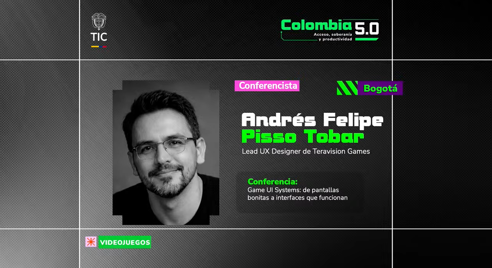
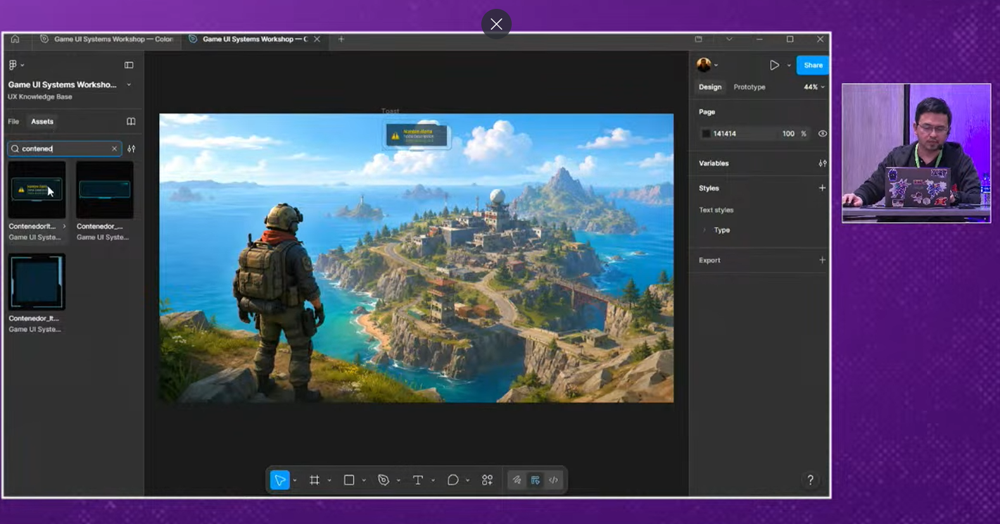
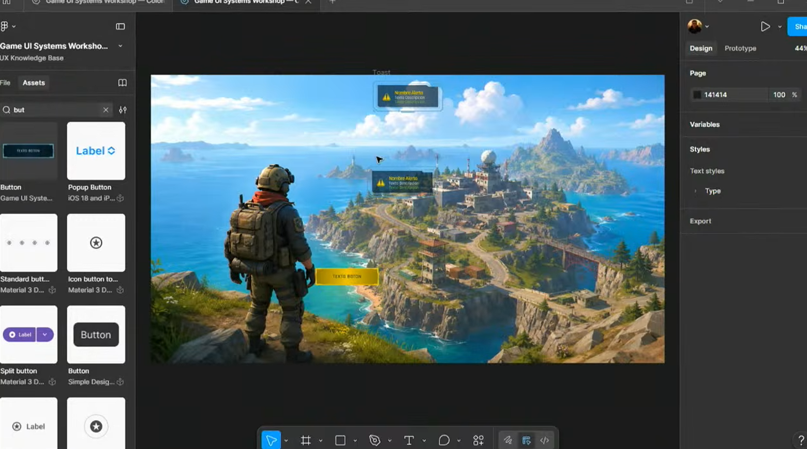
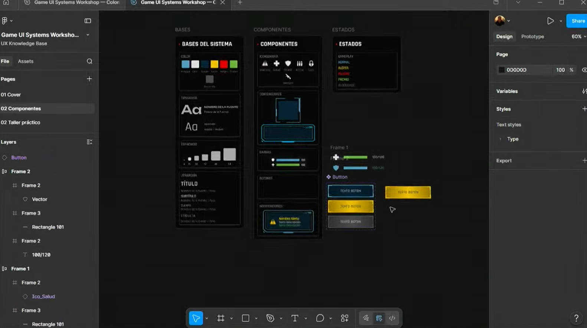
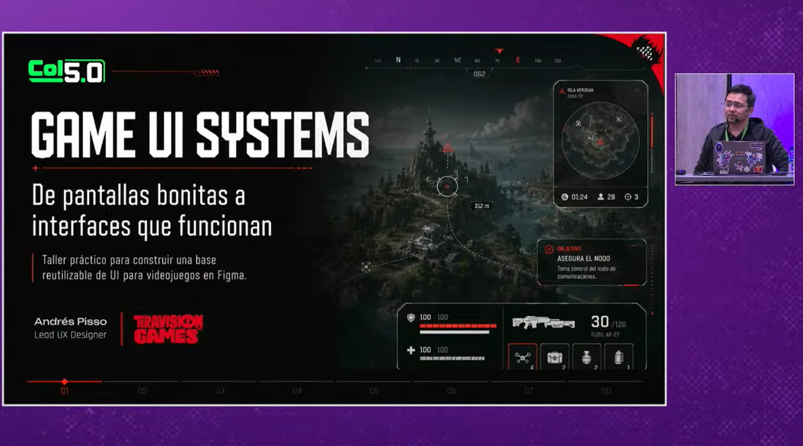
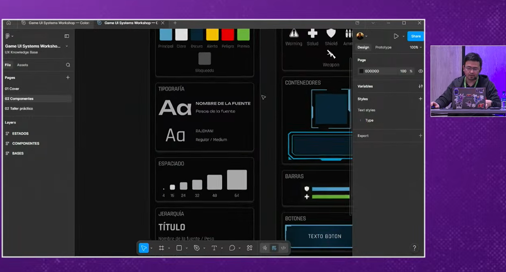
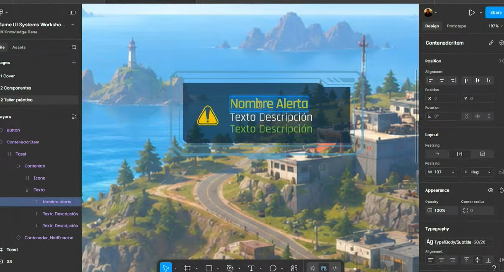
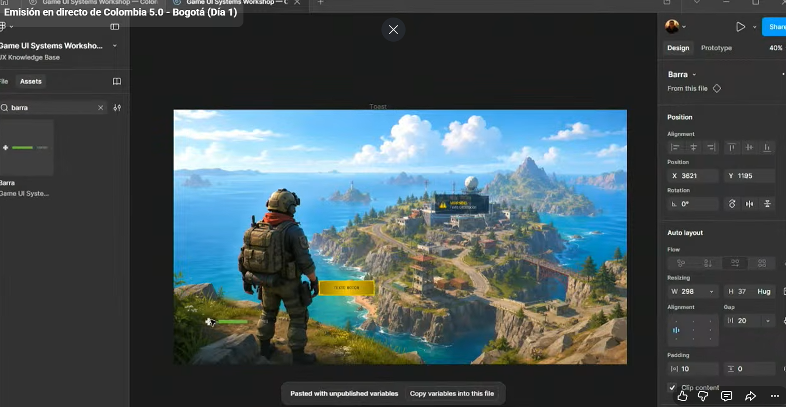
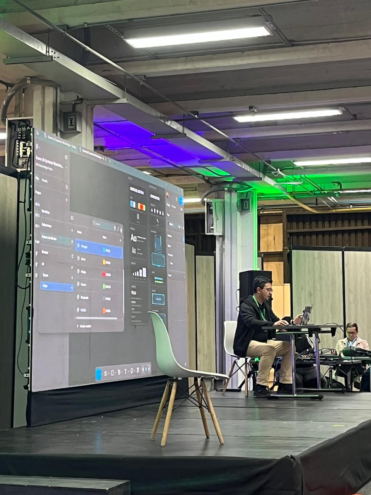

Game UI Systems: de pantallas bonitas a interfaces que funcionan
Conferencista: Andrés Felipe Pisso Tobar | Lead UX Designer en Teravision Games
Eje Central: Metodología de diseño y construcción de sistemas de interfaz interactivos y componentes dinámicos en Figma para la industria de videojuegos.

Resumen del Taller
La ponencia se centró en derribar la brecha entre el arte visual estático y la implementación técnica de interfaces de usuario funcionales. El expositor detalló cómo crear una base de diseño sólida, estableciendo sistemas lógicos de color, reglas tipográficas estrictas (uso de fuentes compactas y legibles) y grillas de espaciado matemático indispensables para un flujo de trabajo óptimo.
En la fase práctica, se mostró detalladamente cómo estructurar componentes maestros y variantes complejas dentro de Figma. Se ejemplificó el desarrollo de barras de estado (vida/energía), ventanas de alerta, cuadros informativos de misiones y menús contextuales estilo cyberpunk, enfatizando en que la UI debe reaccionar de manera fluida y coherente con las mecánicas del juego sin mermar la experiencia del usuario.
Palabras Clave:

Workshop Summary
The presentation focused on bridging the gap between static visual art and the technical implementation of functional user interfaces. The speaker detailed how to create a solid design foundation by establishing logical color systems, strict typography rules (using compact and readable fonts), and mathematical spacing grids indispensable for an optimal workflow.
During the practical phase, the master components and complex variants structure inside Figma was demonstrated in detail. The development of status bars (HP/energy), alert windows, mission information boxes, and cyberpunk-style contextual menus was exemplified, emphasizing that the UI must react smoothly and coherently with game mechanics without diminishing the user experience.
Keywords:
Galería Técnica e Imágenes del Taller (9 Evidencias)








